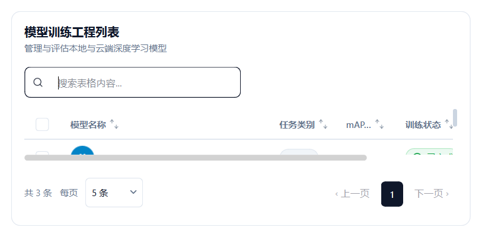

ProTable 仪表盘高级表格¶
MkProTable 是面向现代化桌面软件、AI 模型评估与数据分析系统打造的仪表盘级 Pro 数据表格组件。它借鉴了 Web 领域的 Shadcn-UI、Tailwind 与 Ant Design Pro 的设计美学，将复杂的原生表格操作提炼为极简的声明式 API。
视觉预览¶

基础用法¶
import sys
from PySide6.QtWidgets import QApplication, QWidget, QVBoxLayout
from monkeyqt import MkProTable
class ProTableDemo(QWidget):
def __init__(self):
super().__init__()
self.setWindowTitle("MkProTable 示例")
self.resize(750, 420)
layout = QVBoxLayout(self)
# 1. 声明式定义列结构
columns = [
{"key": "model", "label": "模型名称", "type": "avatar_text", "width": 160},
{"key": "task", "label": "任务类别", "type": "badge", "width": 100},
{"key": "map", "label": "mAP (50-95)", "type": "text", "width": 90},
{"key": "status", "label": "训练状态", "type": "status", "width": 110},
{"key": "action", "label": "快捷操作", "type": "action", "width": 100}
]
# 2. 准备数据集
data = [
{"id": "m1", "model": "YOLOv8-Nano", "task": "Detect", "map": "37.3%", "status": "Completed"},
{"id": "m2", "model": "YOLOv8-Small", "task": "Detect", "map": "44.9%", "status": "Running"},
{"id": "m3", "model": "YOLOv8-Medium", "task": "Detect", "map": "50.2%", "status": "Ready"},
{"id": "m4", "model": "YOLOv8-Nano-Seg", "task": "Segment", "map": "31.2%", "status": "Completed"},
{"id": "m5", "model": "YOLOv8-Pose", "task": "Keypoint", "map": "52.8%", "status": "Pending"},
]
# 3. 实例化 ProTable
self.table = MkProTable(
columns=columns,
data=data,
title="深度学习工程列表",
description="集中监控本地 GPU 训练实验与评估指标",
searchable=True, # 开启右上角模糊搜索框
selectable=True, # 开启第一列复选框多选
page_size=5 # 每页展示条数
)
# 4. 监听常用信号
self.table.selectionChanged.connect(self._on_selection_changed)
self.table.actionTriggered.connect(self._on_action_triggered)
layout.addWidget(self.table)
def _on_selection_changed(self, selected_ids):
print("当前选中的行 ID:", selected_ids)
def _on_action_triggered(self, action_key, row_data):
print(f"触发操作 [{action_key}]，行数据:", row_data["model"])
if __name__ == "__main__":
app = QApplication(sys.argv)
demo = ProTableDemo()
demo.show()
sys.exit(app.exec())
丰富富文本单元格类型 (type)¶
MkProTable 内置了强大的单元格渲染引擎，通过 columns 中的 type 字段即可直接启用：
type 类型 |
效果与特点 | 数据格式示例 |
|---|---|---|
"text" |
纯文本展示，超出宽度自动省略并显示 Tooltip | "37.3%" |
"avatar_text" |
圆形头像徽章 + 蓝色可点击超链接标题 | "YOLOv8-Nano" 或 {"text": "YOLO", "avatar": "path.png"} |
"badge" |
胶囊分类标签（带 Phosphor 分类图标与柔和底色） | "Detect" / "Dataset" |
"status" |
状态药丸（带打勾/圆点），自动匹配 Completed, Running, Failed, Ready 等语义颜色 | "Completed" / "Running" |
"image" |
6px 圆角图片缩略图，悬停浮现眼眸图标，点击自动弹出高清大图 Lightbox 弹窗 | "path/to/preview.png" |
"video" |
视频缩略图带播放角标，点击自动弹出高清视频播放器弹窗 | "path/to/demo.mp4" |
"action" |
操作列（编辑、删除、查看等图标按钮组） | 自动生成或自定义按钮项 |
核心特性¶
1. 顶部搜索框与即时模糊过滤 (searchable=True)¶
在初始化时设置 searchable=True，右上角会自动渲染一个现代风格的搜索输入框。输入任何关键字，表格会实时对所有文本列进行不区分大小写的模糊匹配，并同步刷新分页总数。
2. 跨页多选记忆与全选联动 (selectable=True)¶
开启多选列后，表头提供全选/反选复选框。用户翻页时，之前选中的条目 ID 会自动在内存中持久化记忆，不会因为翻页而丢失选中态。
3. 表头列排序切换¶
点击表头的任意列标题，会自动在“默认排序 → 升序 (↑) → 降序 (↓)”之间循环切换，并即时对当前表格数据重新排序。
4. 底部现代化控制栏¶
内置分页控制器与每页行数下拉切换（10 / 20 / 50 / 100 行），支持总条数自动统计与页码直达。
API 参考¶
构造函数¶
MkProTable(
columns: List[Dict[str, Any]],
data: Optional[List[Dict[str, Any]]] = None,
title: str = "",
description: str = "",
searchable: bool = False,
selectable: bool = False,
page_size: int = 10,
parent: Optional[QWidget] = None
)
方法¶
| 方法名 | 参数 | 返回值 | 说明 |
|---|---|---|---|
set_data(data) |
list[dict] |
None |
更新表格数据并自动刷新分页 |
get_selected_ids() |
- | list |
获取所有选中的条目 ID 列表（包含跨页选中的） |
clear_selection() |
- | None |
清空所有选中态 |
set_search_filter(keyword) |
str |
None |
通过代码手动过滤数据 |
信号¶
| 信号名 | 参数类型 | 说明 |
|---|---|---|
selectionChanged |
list |
当多选状态发生改变时发出，携带所有选中的 ID 列表 |
actionTriggered |
str, dict |
当用户点击操作列按钮时发出，携带 (action_key, row_data) |
rowDoubleClicked |
dict |
双击某一行时发出，携带该行的完整字典数据 |